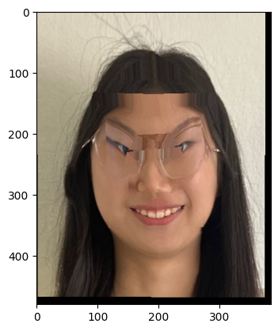

Author: Shujing Hu
This project focuses on generating a morph animation between two faces, computing the mean face of a population, and creating caricatures.
To create a smooth morph, I labeled corresponding keypoints between two faces (my face and the target image) using the correspondence web tool provided. Key points were labeled consistently for features like the eyes, mouth, and chin. I then used Delaunay triangulation on the average keypoints to generate triangles for warping.
Keypoints (Triangulation shown below in part 2)
I computed the average shape from the two sets of points and warped both faces to this mid-way shape. The color of the two faces was averaged to generate a mid-way face.
Midway Face of Image A and Image B
For the morphing sequence, I generated 10 frames, warping the shapes of the images step by step and cross-dissolving the colors to create the morph animation.
Morph Sequence
Morph Animation
For the Danes dataset, I selected the subset of males with smiling faces. I used their keypoints from parsing asf files to compute the average face shape of the population. Then, I morphed each individual face to this average geometry and take the mean for morphed images.
Mean Face of the Population
I first cropped the mean face I got from part 4 to the same ratio of my self portrait, and then I resize my self portrait image so that they have the exact same shape. By extrapolating from the population mean, I created a caricature of my face, which is a little twisted.
Resized images and correspondent keypoints
My caricature (kinda funny)
I changed the subset to female 6, which is the female joker faces. Then, I cropped the mean face I got from this subset to the same ratio of my self portrait, and I use the resized self portrait image so that they have the exact same shape. By extrapolating from the population mean, I changed my smiling face to a joker face that I could never do in real life.
Population mean for female joker face
Correspondent keypoints
My caricature joker face (looks really funny)
One challenge was ensuring that the correspondence between the two sets of points was consistent and that the triangulation worked well for warping. The affine transformation for each triangle was crucial in achieving smooth transitions.
This project helped me explore facial morphing techniques and the mathematical foundations. I was able to create smooth morphing animations and experiment with population-level face analysis.